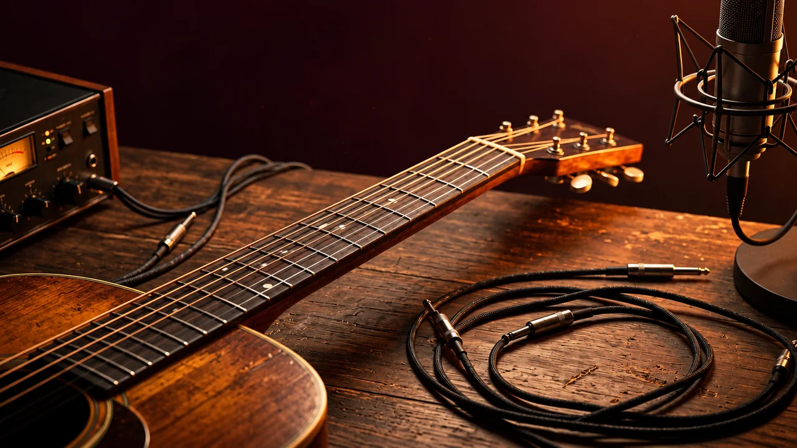

ESCUCHA TU ALTURA · AJUSTA CON CALMA
Afinador y entonación

Detecta una sola nota sostenida con el micrófono o explora una demostración sin permisos. El afinador muestra la nota más cercana; la práctica compara tu sonido con un objetivo.
Al cambiar ajustes se reinicia la medición actual.
Fuente: —
Nota detectada
Frecuencia estimada: —
Desviación: —
Nota objetivo:
Mi medición
Tiempo de señal útil: 0
Tiempo estimado dentro del margen: —
Historial local
Cómo practicar
Elige una nota cómoda, escucha la referencia y después activa el micrófono. Usa auriculares para que el sonido de referencia no entre por el micrófono. Para comparar otra nota, detén la entrada y cambia el objetivo. Un semitono equivale a 100 cents: una cifra negativa indica un sonido más grave que la referencia, y una positiva, más agudo.
Límites de la lectura
Funciona con una sola nota aproximadamente entre 40 y 1200 Hz. Ruido, acordes, percusión, armónicos dominantes, reverberación o cambios rápidos pueden causar lecturas erróneas o confusión de octava. La estabilidad y el porcentaje son orientativos, no una evaluación completa de la voz o del instrumento.
Se analiza altura, no calidad vocal ni interpretación musical.
Detector probado con señales sintetizadas; todavía falta contrastarlo en distintos micrófonos y dispositivos reales.
El análisis se hace en esta página. No se graba ni se envía audio. Al detener o salir de la pestaña se cierran las pistas del micrófono. Solo se guardan fecha, objetivo, referencia, margen y resumen numérico cuando pulsas Guardar medición.